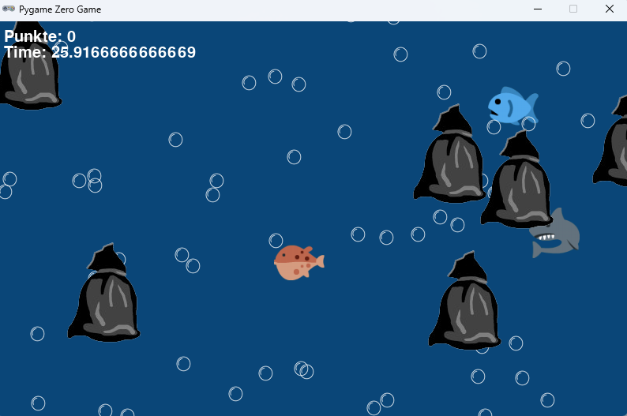

Spielprinzip ist simpel: Man versucht, die Fische anzuklicken. Dafür bekommt man Punkte.
Diese Punkte kann man aber auch verlieren, wenn man zum Beispiel ins Wasser klickt oder auf einen Müllsack.
Verschiedene Objekte geben unterschiedlich viele Punkte. Der Müllsack gibt zum Beispiel -10 Punkte.
Die Fische bewegen sich verschieden schnell und geben auch unterschiedlich viele Punkte. Der Hai ist der schnellste und gibt +5 Punkte.
Der ganz normale Fisch gibt nur 0,5 Punkte. Die Geschwindigkeit ist natürlich auf die Punktanzahl abgestimmt.
Es ist in Python geschrieben. Ihr könnt es euch selbst über GitHub herunterladen und testen. (^^)
https://github.com/Zylorowo/Aquarium
oder wenns nicht funktionirt
https://github.com/Zylorowo/Aquarium
Oder schneller